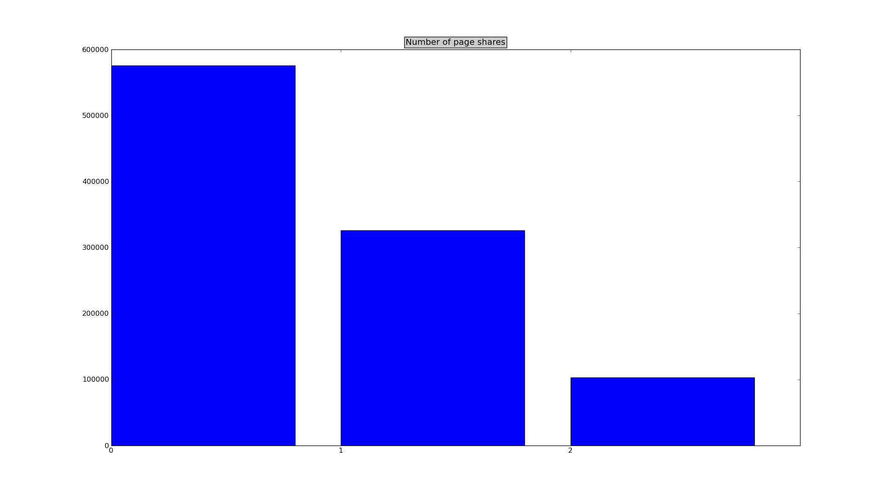
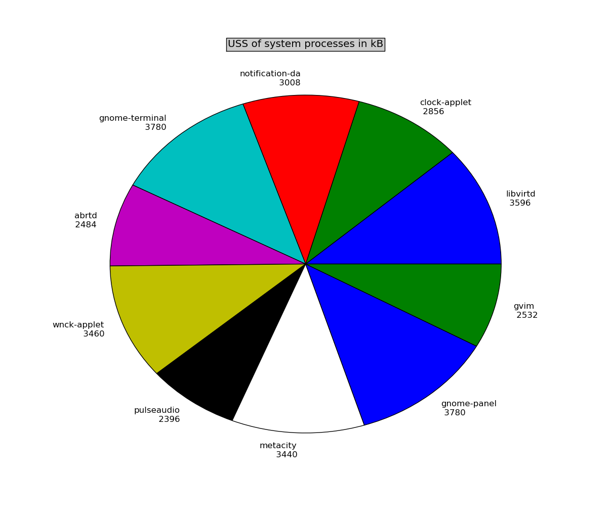
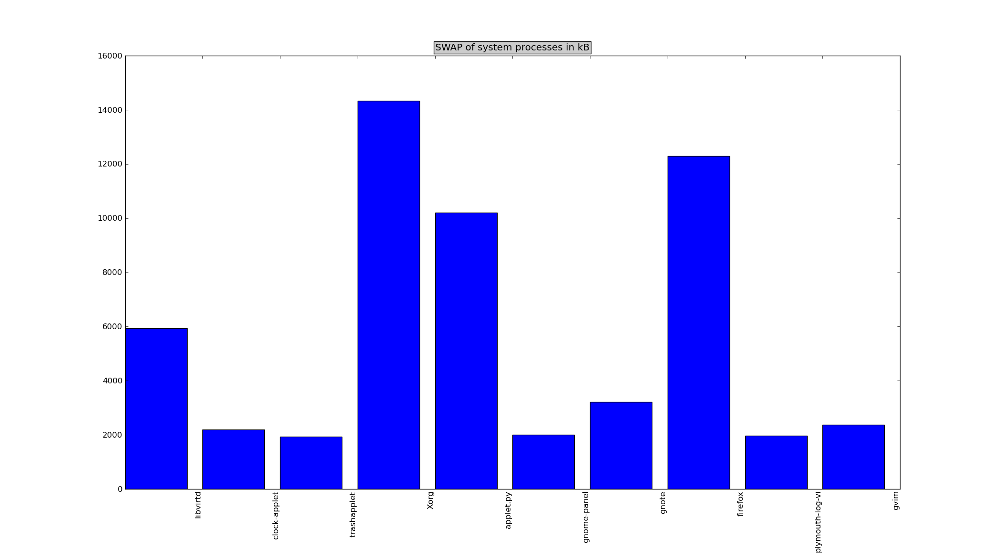
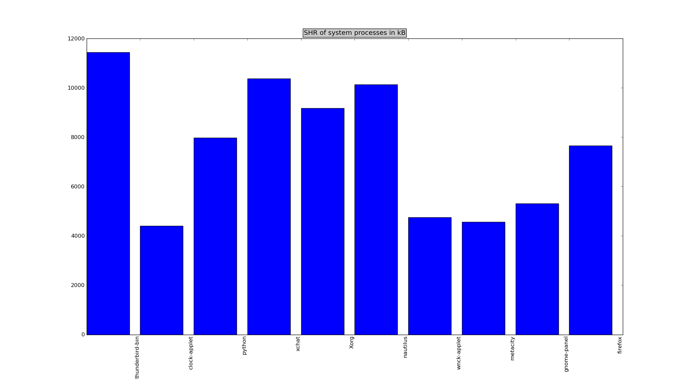

Pagemapvisual
What is it?
Pagemapvisual is simple script written in Python enables system administrators (or another user
with root privileges) read kernel pagemap interface and show given data as charts using
matplotlib.
What is provided by pagemap interface?
- USS and PSS metrics
- shared memory per process statistics
- accurate swap count
- accurate amount of resident memory
- a lot of flags for every physical page in system
- further info Documentation/vm/pagemap.txt
Usage
usage: pagemapvisual [-h] [--stat [STAT]] [--label [LABEL]]
[--filtery [FILTERY]] [--logy] [--limity [LIMITY]]
{pagecount,pageflags,pagemap} {bar,pie}
positional arguments:
{pagecount,pageflags,pagemap}
source of data
{bar,pie} type of chart
optional arguments:
-h, --help show this help message and exit
--stat [STAT] type of statistics to plot STAT=[uss|pss|shr|swap|res]
uss is default
--label [LABEL] type of label on pagemap statistics LABEL=[name|pid]
--filtery [FILTERY] filter used for y-axis values FILTERY=[[from]:[to]]
--logy enable log scale on y-axis
--limity [LIMITY] eliminates results to first/last y-values
LIMITY=[[+|-]NUMBER]
Examples
Few examples of use:
pagemapvisual pagecount pie --filtery=1000:

pagemapvisual pagecount bar --filtery=50000:

pagemapvisual pagemap pie --filtery=:10000 --limity=10

pagemapvisual pagemap bar --filtery=:100000 --limity=10 --stat=swap

pagemapvisual pagemap bar --limity=10 --stat=shr

Want to report bug or submit a patch?
Petr Holasek
Copyright (C) 2010 Red Hat, Inc. All rights reserved.